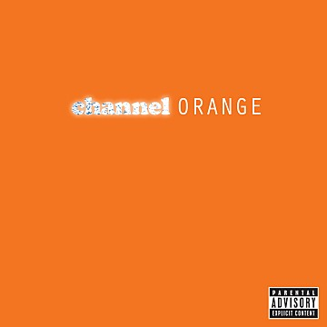

CHANNEL ORNAGE _ FRANK OCEAN

- Track - Start//Thinkin Bout You//Fertilizer//Sierra Leone//Sweet Life//Not Just Money//Super Rich Kids//Pilot Jones//Crack Rock//Pyramids//Lost//White//Monks//Bad Religion//Pink Matter//Forrest Gump//End
- Why? - "blond"를 더 좋아하지만, 푸릇한 프랭크오션을 느낄 수 있어서 좋다. 여러 장르의 음악을 좋아하지만 유독 이런 류의 R&B, 힙합 음악을 잘 듣지 않았다. 하지만 프랭크오션을 듣고 이런 장르들 또한 좋아지기 시작했다. 신난다.
- Live -